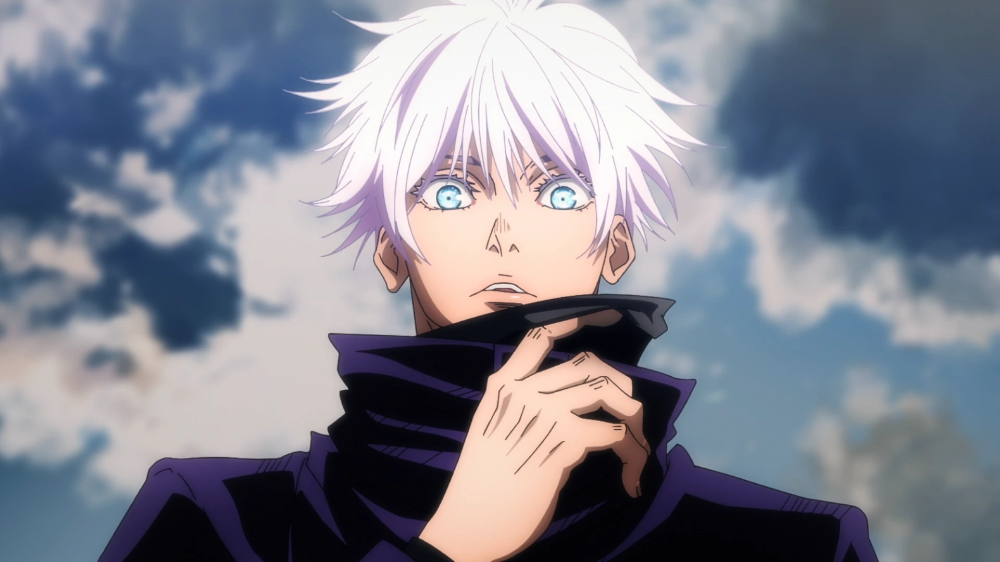

Satoru Gojo is the strongest sorcerer in Jujutsu Kaisen, known for his overwhelming power, iconic design, and role as both mentor and protector of his students. He’s famous for his white hair, glowing blue Six Eyes, and carefree personality that hides a sharp determination to reform the jujutsu world.
Gojo stands out with his snow‑white hair and piercing blue Six Eyes, which he usually hides behind a blindfold or dark glasses. His height and confident posture give him a commanding presence.
He typically wears a sleek black high‑collared outfit with slim pants and boots, giving him a modern, stylish look that matches his cool personality.

Gojo’s Limitless technique allows him to manipulate space at an atomic level, creating abilities like Infinity, which makes him untouchable, and Hollow Purple, a devastating attack.
Combined with his Six Eyes, he can perceive cursed energy with incredible precision, making him nearly impossible to defeat. His power is considered a “living deterrent” in the jujutsu world.
As a mentor, Gojo trains Yuji Itadori, Megumi Fushiguro, and Nobara Kugisaki, guiding them to become strong sorcerers. His teaching style is unconventional but effective.
His sealing in the Prison Realm during the Shibuya Incident marks a turning point in the story, showing how much the jujutsu world relies on his presence.
Gojo’s eyes are described as so beautiful they make the sky jealous. He often breaks traditions, like calling students by their first names instead of last.
Despite his overwhelming strength, he chooses to be a teacher, believing that shaping the next generation is the best way to change the future.